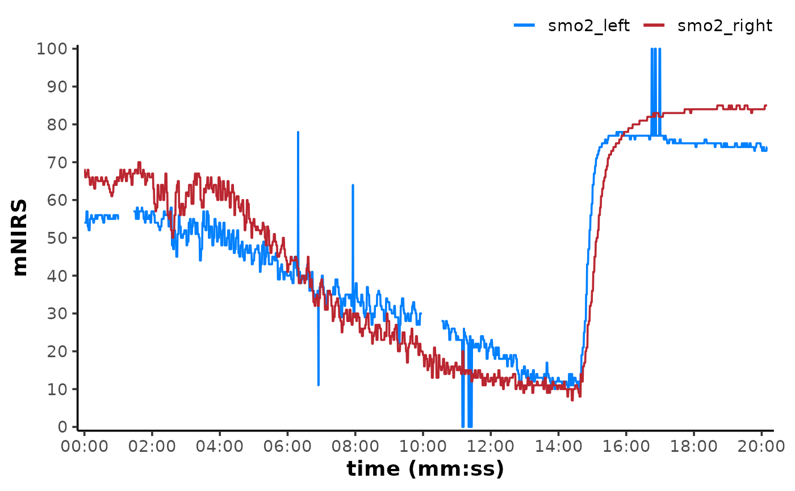

Create a simple plot for objects returned from create_mnirs_data().
Usage
# S3 method for class 'mnirs'
plot(x, ...)Arguments
- x
Object of class "mnirs" returned from
create_mnirs_data()- ...
Additional arguments:
label_timeA logical to display x-axis time values formatted as "hh:mm:ss" using
scales::label_time().label_time = FALSE(the default) will display simple numeric values on the x-axis.n.breaksA numeric value to define the number of breaks in both x- and y-axes.
na.omitA logical to omit missing (
NA) values for better display of connected lines.na.omit = FALSE(the default) can be used to identify missing values.
Value
A ggplot2 object.
Examples
data_table <- read_mnirs(
file_path = example_mnirs("moxy_ramp"),
nirs_channels = c(smo2_right = "SmO2 Live",
smo2_left = "SmO2 Live(2)"),
time_channel = c(time = "hh:mm:ss"),
verbose = FALSE
)
## note the hidden options to display time values as `h:mm:ss` with 8 breaks
plot(data_table, label_time = TRUE, n.breaks = 8)
